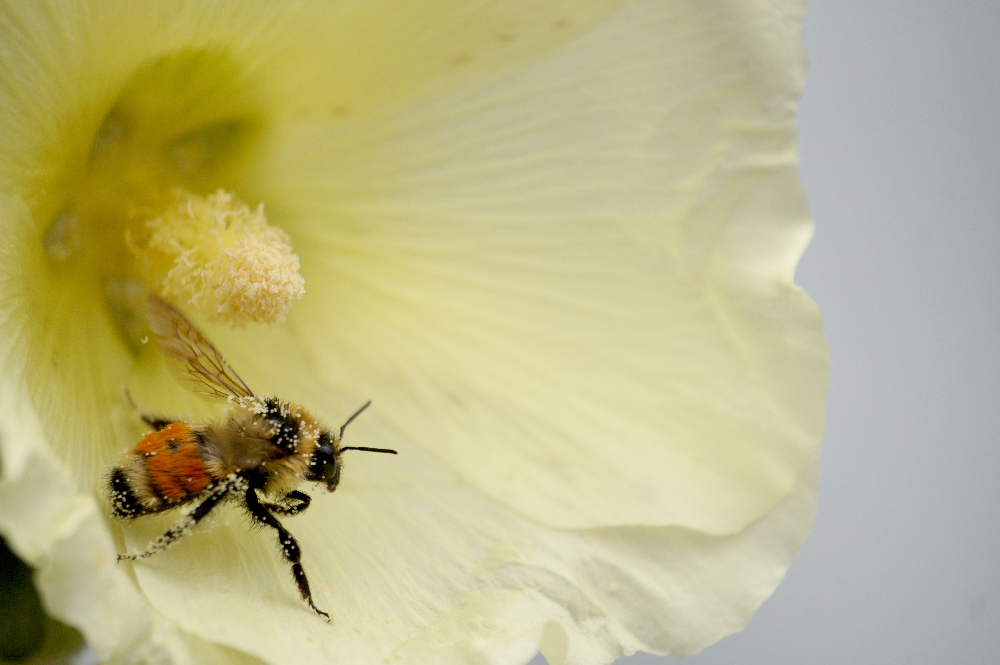

En se promenant de fleur en fleur, les abeilles se frottent aux étamines et récolte le pollen. Sans le vouloir, elles vont le transporter vers d’autres fleurs et déposer le pollen sur la cellule femelle, le pistil. C’est ce qu’on appel la pollinisation.

Pourquoi les abeilles sont-elles importantes à la vie ?
Tous les jours, tu manges des fruits et des légumes ? Des tomates, des haricots, des pommes, des cerises…
- Sais-tu comment sont produits ces fruits et ces légumes ?
- Sais-tu que c’est en partie grâce aux abeilles que tu peux en manger ?
Je vais t’expliquer tout ça…
Les abeilles servent à produire du miel, c’est bien !
Mais elles ont une mission encore plus importante : la pollinisation qui permet aux plantes de se reproduire.
Pour tout être vivant, l’objectif est de se reproduire et d’assurer la survie de l’espèce.
Pour les hommes, il s’agit de mettre au monde des enfants.
Pour les plantes, il s’agit de produire des graines, des pépins, des noyaux… En tombant au sol, ils vont germer et donner naissance à de nouvelles plantes. Cela passe par la fécondation.